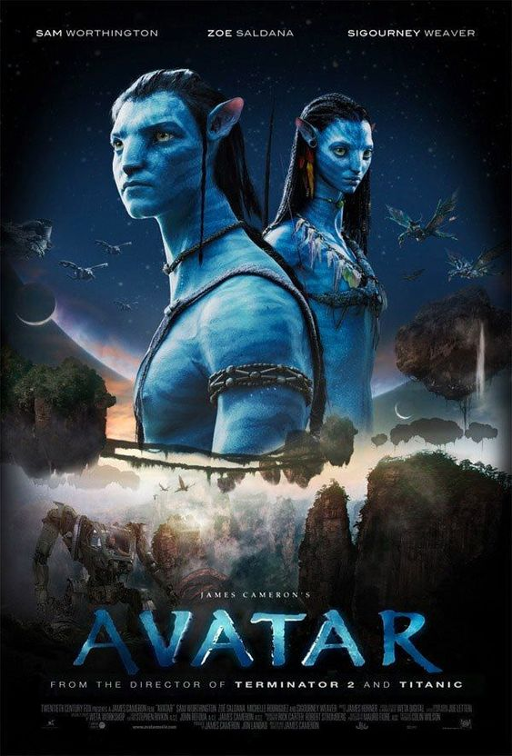

No exuberante mundo alienígena de Pandora vivem os Na'vi, seres que parecem ser primitivos, mas são altamente evoluídos. Como o ambiente do planeta é tóxico, foram criados os avatares, corpos biológicos controlados pela mente humana que se movimentam livremente em Pandora. Jake Sully, um ex-fuzileiro naval paralítico, volta a andar através de um avatar e se apaixona por uma Na'vi. Esta paixão leva Jake a lutar pela sobrevivência de Pandora.
O filme é 40% com atores de verdade e 60% com imagens geradas por computador. Para ajudar os atores a se prepararem aos papéis, Cameron levou o elenco e a equipe para o Havaí, onde passavam dias caminhando pelas florestas e selvas e vivendo como tribos (construindo fogueiras, pescando, entre outros), para terem um senso maior do que seria viver e andar por Pandora. Conheça um pouco dos atores principais do filme, Avatar - Elenco World
A Disney anunciou que a área temática do filme Avatar, chamada de The World of AVATAR no Disney’s Animal Kingdom, foi inaugurada no dia 27 de maio de 2017. Conta com uma atração Na’vi River Journey e AVATAR Flight of Passage.